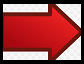
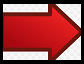

Control Pro de Nintendo Switch
El Nintendo Switch Pro Controller es un controlador tradicional para el Nintendo Switch, similar al Controlador clásico y al Wii U Pro Controller en sistemas anteriores. A diferencia de los Pro Controllers anteriores, el Nintendo Switch Pro Controller transfiere la mayoría de las funciones que se encuentran en la configuración de control principal de su sistema. No solo tiene un botón de captura de pantalla, sino que también cuenta con los controles de movimiento, soporte de amiibo y Vibración HD que se encuentran en los Joy-Con. Si bien su forma es generalmente una forma rectangular única y redondeada, su diseño recuerda al de un controlador de Xbox o GameCube con el stick analógico derecho en la parte inferior y el stick izquierdo en la parte superior. El controlador se puede cargar a través de un cable USB-C, al igual que el Joy-con grip. (Nintendo Wiki,2018)
Tarjeta MicroSD
Con la consola Nintendo Switch, solo se pueden utilizar tarjetas microSD. Debido al tamaño de la ranura, las tarjetas SD y miniSD no son compatibles con la consola Nintendo Switch.
La consola Nintendo Switch es compatible con los siguientes tipos de tarjetas microSD:
Importante:
Para usar una tarjeta microSDXC con la consola Nintendo Switch, es necesario actualizar la consola.
Se recomienda utilizar una tarjeta microSD con una velocidad de transferencia elevada para poder disfrutar de una experiencia de juego óptima.
Directrices sobre tarjetas microSD de alta velocidad:
Las capturas de pantalla y vídeos de juegos se pueden transferir de la memoria de la consola a una tarjeta microSD, y viceversa. Los programas descargables, no. Si quieres liberar espacio en la memoria de la consola, introduce una tarjeta microSD en la consola, elimina programas guardados y vuelve a descargarlos de Nintendo eShop.
Dock de la Nintendo Switch
Básicamente el dock es una estructura realizada en plástico que mantiene la Switch en vertical y que se comunica con ella a través del mismo puerto USB que usamos para cargar su batería. Sin embargo, realmente sirve como un adaptador que deriva en cuatro entradas: una de HDMI con la que asociaremos la consola a la televisión, una de carga y dos puertos USB diferentes, (uno 3.0 junto a las dos anteriores y otros dos 2.0 en la parte exterior).
El dock no tiene demasiado misterio, aunque llama la atención que si estamos interesados en hacernos con uno extra, el precio del modelo oficial sea de 89,99 euros (eso sí, incluyendo los cables necesarios). Ahora bien, las alternativas de otros adaptadores similares hoy en día -aunque bastante más asequibles- no son especialmente económicas.
(Nintendo Wiki,2018)

El precio de los complementos para la Nintendo Switch ha sido uno de los grandes puntos a debatir dentro de la interesante propuesta de Nintendo. De momento, toca esperar hasta el próximo 3 de marzo para comprobar todo lo que puede ofrecer la consola, incluyendo lo que de verdad importa: su propuesta jugable.
Adaptador USB inalámbrico 8BitDo 2
8Bitdo es una empresa de hardware de videojuegos de terceros con un enfoque especial en controladores de juegos con temática retro.
(Nintendo Wiki,2018)
Ultimate Software te brinda control de élite sobre cada parte de tu controlador: personaliza la asignación de botones, ajusta la sensibilidad del joystick y del gatillo, controla la vibración y crea macros con cualquier combinación de botones .
(Nintendo Wiki,2018)
Índice
Presentación
Página principal:
1.Juegos
>2.Accesorios
3.Tipos de Nintendo Switch
Fuentes Bibliográficas
 


Melodía de Nintendo